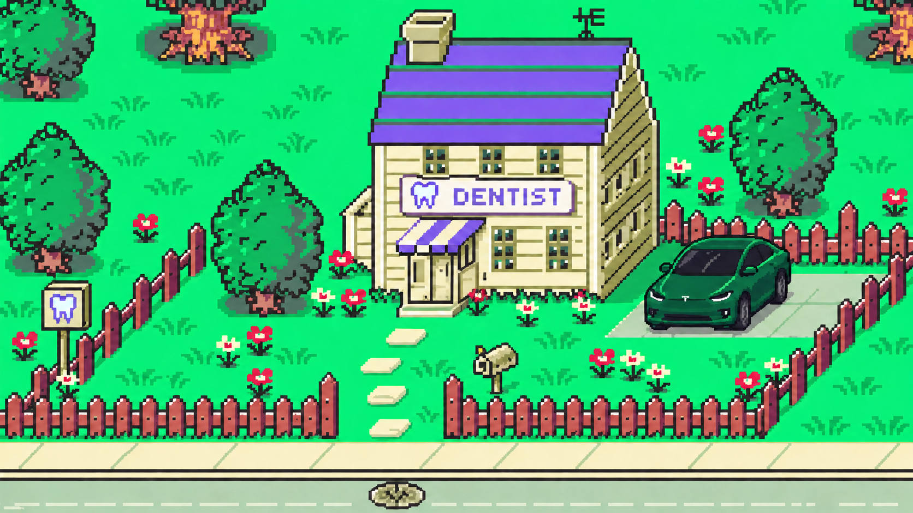

<title>Molar Quest</title>
<link rel="stylesheet" href="https://fonts.googleapis.com/css2?family=Press+Start+2P&display=swap">
<style>
/* Molar Quest keeps one committed visual world -- a bright 16-bit clinic screen --
   so it paints its own ground and colors rather than following the host theme. */
:root{--ink:#222d35;--paper:#fffde6;--violet:#7257e7;--green:#07e66e;--coral:#ff5e73;--gold:#ffe465}
*{box-sizing:border-box}
html,body{margin:0;min-height:100%;background:#173e31;color:var(--ink);overscroll-behavior:none}
body,button{font-family:"Press Start 2P",ui-monospace,"Courier New",monospace}
button{color:inherit}
:focus-visible{outline:3px solid var(--gold);outline-offset:2px}

.game-shell{min-height:100vh;display:grid;grid-template-rows:auto 1fr auto;align-items:center;background:radial-gradient(circle at 50% 12%,#2d6d4c 0,#173e31 68%);overflow:hidden}
.game-topbar{height:68px;padding:9px clamp(14px,3vw,46px);display:flex;align-items:center;justify-content:space-between;background:var(--paper);border-bottom:5px solid var(--ink);box-shadow:0 4px 0 #40a468;z-index:10}
.game-title{display:flex;align-items:center;gap:12px}
.game-title>span:last-child{display:flex;flex-direction:column;gap:5px}
.game-title b{font-size:15px;letter-spacing:1px}
.game-title small{font-size:6px;color:#5f6870}
.tooth-mark{display:grid;place-items:center;width:42px;height:42px;background:var(--violet);border:4px solid var(--ink);box-shadow:4px 4px 0 var(--ink);color:#fff;font-size:15px}
.location{font-size:9px}
.location i{display:inline-block;width:9px;height:9px;margin-right:8px;border-radius:50%;background:#0be675;border:2px solid #087744;box-shadow:0 0 0 3px #a5f6c5}
.top-actions{display:flex;align-items:center;gap:10px}
.help-button,.music-button{width:38px;height:38px;border:4px solid var(--ink);box-shadow:3px 3px 0 var(--ink);font-size:14px;cursor:pointer}
.help-button{background:var(--gold)}
.music-button{background:#dff9e5}
.music-button.playing{background:var(--violet);color:#fff}

.world-frame{position:relative;width:min(100vw,calc((100vh - 116px)*1.7779));aspect-ratio:1672/941;margin:auto;border-inline:5px solid var(--ink);overflow:hidden;background:#07e66e;isolation:isolate;box-shadow:0 10px 30px #071e1590}
.world-art{position:absolute;inset:0;width:100%;height:100%;object-fit:cover;image-rendering:pixelated;user-select:none;-webkit-user-drag:none;z-index:0}

.claire-sprite{position:absolute;width:10%;aspect-ratio:1;transform:translate(-50%,-86%);background-image:url('claire.png');background-size:300% 400%;background-repeat:no-repeat;image-rendering:pixelated;z-index:5;filter:drop-shadow(3px 4px 0 #15482e70);will-change:left,top,background-position}
.claire-sprite.walking{animation:walk-bob .18s steps(2,end) infinite}
@keyframes walk-bob{50%{margin-top:-.35%}}

.cat-roam{position:absolute;width:7.28%;aspect-ratio:1;z-index:3;will-change:left,top}
.cat-roam.prowling{animation:cat-pad .32s steps(2,end) infinite}
.cat-sprite{width:100%;height:100%;background:url('cat.png') 0 100%/400% 300% no-repeat;image-rendering:pixelated;filter:drop-shadow(1px 2px 0 #15482e55);will-change:background-position}
@keyframes cat-pad{50%{margin-top:-.25%}}

.welcome-card,.clinic-card{position:absolute;z-index:20;left:50%;top:50%;translate:-50% -50%;width:min(470px,78%);padding:28px;background:#fffde6f2;border:5px solid var(--ink);box-shadow:9px 9px 0 #25333abb;text-align:center}
.welcome-card>button:first-child,.close-card{position:absolute;right:8px;top:7px;border:0;background:transparent;font-size:20px;cursor:pointer}
.welcome-card p,.clinic-card p{margin:0 0 12px;color:#6650d7;font-size:8px}
.welcome-card h1,.clinic-card h2{margin:0 0 13px;font-size:clamp(17px,3vw,30px);line-height:1.35;text-wrap:balance}
.welcome-card>span,.clinic-card>span{display:block;font-family:Arial,Helvetica,sans-serif;font-weight:700;font-size:14px;line-height:1.45;color:#4a5555}
.welcome-card>div{display:flex;justify-content:center;align-items:center;gap:8px;margin:18px 0 0;font-size:7px}
.welcome-card kbd,footer kbd,.interaction-hint kbd{padding:6px 7px;background:var(--ink);color:#fff;border:0;box-shadow:2px 2px 0 var(--violet);font-family:inherit;font-size:7px}
.start-button{margin-top:20px;padding:14px 17px;border:4px solid var(--ink);background:var(--violet);color:#fff;box-shadow:4px 4px 0 var(--ink);font-size:8px;cursor:pointer}
.start-button:active,.help-button:active,.music-button:active,.dpad button:active{translate:2px 2px;box-shadow:1px 1px 0 var(--ink)}

.interaction-hint{position:absolute;z-index:12;left:50%;bottom:13%;translate:-50% 8px;display:flex;align-items:center;gap:10px;padding:10px 13px;background:var(--paper);border:3px solid var(--ink);box-shadow:4px 4px 0 #21332c99;font-size:7px;opacity:0;transition:.16s ease;pointer-events:none}
.interaction-hint.visible{opacity:1;translate:-50% 0}

.dpad{position:absolute;z-index:15;left:3%;bottom:4%;display:grid;grid-template-columns:repeat(3,42px);grid-template-rows:repeat(3,42px);opacity:.88;touch-action:none}
.dpad button{border:3px solid var(--ink);background:#fffde6dc;box-shadow:2px 2px 0 #1c3930aa;font-size:12px;cursor:pointer;touch-action:none}
.dpad button:nth-child(1){grid-column:2}
.dpad button:nth-child(2){grid-column:1;grid-row:2}
.dpad .dpad-center{grid-column:2;grid-row:2;background:var(--coral);color:#fff;border-radius:50%}
.dpad button:nth-child(4){grid-column:3;grid-row:2}
.dpad button:nth-child(5){grid-column:2;grid-row:3}

footer{height:48px;padding:0 clamp(14px,3vw,46px);display:flex;align-items:center;gap:28px;background:var(--paper);border-top:5px solid var(--ink);font-size:7px;z-index:10}
footer span{display:flex;align-items:center;gap:8px}
footer em{margin-left:auto;color:#68756e;font-style:normal}

/* Portrait phones get a turn-sideways prompt; the scene is a 1.78:1 landscape frame. */
.rotate-hint{display:none}
@media(orientation:portrait) and (max-width:900px) and (pointer:coarse){
 .rotate-hint{position:fixed;inset:0;z-index:60;display:grid;place-content:center;justify-items:center;gap:18px;padding:30px;background:#173e31f5;text-align:center}
 .rotate-hint i{display:block;width:34px;height:58px;border:4px solid var(--gold);border-radius:7px;box-shadow:inset 0 0 0 3px #173e31,0 0 0 3px #0e2b22;animation:tip-turn 2.4s ease-in-out infinite}
 .rotate-hint b{font-size:11px;line-height:1.9;color:var(--paper)}
 .rotate-hint span{font-family:Arial,Helvetica,sans-serif;font-weight:700;font-size:13px;color:#9dc4b1}
}
@keyframes tip-turn{0%,40%{rotate:0deg}60%,100%{rotate:90deg}}

/* Phones and short viewports: drop the top bar and footer, float only the audio/help keys. */
@media(max-width:900px),(max-height:560px){
 .game-shell{min-height:0;height:100vh;height:100dvh;grid-template-rows:1fr}
 .game-topbar{position:fixed;top:0;right:0;left:auto;width:auto;height:auto;padding:9px;background:transparent;border-bottom:0;box-shadow:none;z-index:30}
 .game-title,.location{display:none}
 footer{display:none}
 .help-button,.music-button{width:34px;height:34px;border-width:3px;box-shadow:2px 2px 0 var(--ink)}
 .world-frame{width:min(100vw,calc(100dvh*1.7779));max-width:none;border-inline:0}
 .welcome-card,.clinic-card{padding:20px 16px}
 .welcome-card h1,.clinic-card h2{font-size:16px}
 .welcome-card>span,.clinic-card>span{font-size:12px}
 .dpad{grid-template-columns:repeat(3,37px);grid-template-rows:repeat(3,37px)}
}

@media(prefers-reduced-motion:reduce){
 .claire-sprite.walking,.cat-roam.prowling,.rotate-hint i{animation:none}
 .interaction-hint{transition:none}
}
</style>

<main class="game-shell" tabindex="-1">
 <audio id="bgm" src="bgm.mp3" loop preload="metadata"></audio>

 <div class="game-topbar">
  <div class="game-title"><span class="tooth-mark">&hearts;</span><span><b>MOLAR QUEST</b><small>CLAIRE'S DENTAL ODYSSEY</small></span></div>
  <div class="location"><i></i> PEARL DISTRICT</div>
  <div class="top-actions">
   <button class="music-button" id="music" aria-label="Play background music">&#9834;</button>
   <button class="help-button" id="help" aria-label="Show controls">?</button>
  </div>
 </div>

 <section class="world-frame" aria-label="Pearl District outside Claire's dental clinic">
  
  <div class="claire-sprite" id="claire" role="img" aria-label="Claire facing down"></div>
  <div class="cat-roam" id="catRoam" aria-hidden="true"><div class="cat-sprite" id="catSprite"></div></div>

  <div class="interaction-hint" id="hint"><kbd>SPACE</kbd><span>ENTER CLINIC</span></div>

  <div class="welcome-card" id="welcome">
   <button id="closeWelcome" aria-label="Close instructions">&times;</button>
   <p>PEARL DISTRICT</p>
   <h1>Claire's clinic day</h1>
   <span>Walk around the neighborhood and head to the clinic door.</span>
   <div><kbd>WASD</kbd><kbd>ARROWS</kbd><b>TO MOVE</b></div>
   <button class="start-button" id="start">START WALKING <b>&rsaquo;</b></button>
  </div>

  <div class="clinic-card" id="clinic" hidden>
   <button class="close-card" id="closeClinic" aria-label="Close clinic window">&times;</button>
   <p>CLAIRE'S DENTAL CLINIC</p>
   <h2>Ready for a bright day.</h2>
   <span>The first patient arrives at 9:00. Explore the garden, then come back to begin appointments.</span>
   <button class="start-button" id="backOutside">BACK OUTSIDE</button>
  </div>

  <div class="dpad" aria-label="Movement controls">
   <button data-dir="up" aria-label="Walk up">&#9650;</button>
   <button data-dir="left" aria-label="Walk left">&#9664;</button>
   <button class="dpad-center" id="interact" aria-label="Interact">A</button>
   <button data-dir="right" aria-label="Walk right">&#9654;</button>
   <button data-dir="down" aria-label="Walk down">&#9660;</button>
  </div>
 </section>

 <footer>
  <span><kbd>WASD</kbd> OR <kbd>ARROWS</kbd> WALK</span>
  <span><kbd>SPACE</kbd> INTERACT</span>
  <em>Find the clinic door</em>
 </footer>

 <div class="rotate-hint" role="note">
  <i aria-hidden="true"></i>
  <b>TURN YOUR PHONE</b>
  <span>Molar Quest plays sideways.</span>
 </div>
</main>

<script>
(function(){
 "use strict";

 var START={x:49.5,y:67,direction:"down",frame:1,moving:false};
 var frameOrder=[0,1,2,1];
 var directionRow={down:0,left:1,right:2,up:3};

 // Decorative cat: lawn waypoints in scene percentages, left of the clinic walkway.
 var CAT_PATH=[{x:14.5,y:56.5},{x:28,y:58.5},{x:24,y:61},{x:15.5,y:59.8}];
 // Scene is 1672x941, so a vertical percent covers less ground than a horizontal one.
 var SCENE_Y_SCALE=941/1672;
 var CAT_SPEED=3.2,CAT_REST=2.4;

 // Footsteps are synthesised so the page needs no extra audio asset.
 var STEP_FRAME=0.09,STEP_GAIN=0.45;

 function blockedAt(x,y){
  if(x<3||x>97||y<38||y>96)return true;
  if(x>36&&x<73&&y<60)return true;
  if(x>69&&x<89&&y>43&&y<68)return true;
  if(x<14&&y<58)return true;
  if(x>22&&x<36&&y<61)return true;
  if(x>80&&y<49)return true;
  if(x>52&&x<58&&y>64&&y<78)return true;
  return false;
 }

 function canMove(fromX,fromY,toX,toY){
  if(blockedAt(toX,toY))return false;
  var fenceY=76,crossesFence=(fromY<=fenceY&&toY>fenceY)||(fromY>=fenceY&&toY<fenceY);
  return !crossesFence||(toX>37&&toX<52);
 }

 var shell=document.querySelector(".game-shell");
 var claire=document.getElementById("claire");
 var catRoam=document.getElementById("catRoam"),catSprite=document.getElementById("catSprite");
 var hint=document.getElementById("hint");
 var welcome=document.getElementById("welcome"),clinic=document.getElementById("clinic");
 var musicButton=document.getElementById("music"),track=document.getElementById("bgm");

 var player={x:START.x,y:START.y,direction:START.direction,frame:START.frame,moving:START.moving};
 var keys={},touchDirection=null,last=0,stepClock=0,lastStep=-1,nearClinic=false;

 /* ---- audio ---------------------------------------------------------- */
 var sfx=null,scuff=null;

 // Browsers only allow audio after a gesture, so the context is built on first input.
 function ensureAudio(){
  if(!sfx){
   var Ctor=window.AudioContext||window.webkitAudioContext;
   if(!Ctor)return null;
   sfx=new Ctor();
  }
  if(sfx.state==="suspended")sfx.resume();
  return sfx;
 }

 function playFootstep(){
  if(!sfx||sfx.state!=="running")return;
  if(!scuff){
   var frames=Math.floor(sfx.sampleRate*0.05);
   scuff=sfx.createBuffer(1,frames,sfx.sampleRate);
   var samples=scuff.getChannelData(0);
   for(var i=0;i<frames;i++)samples[i]=(Math.random()*2-1)*Math.pow(1-i/frames,3);
  }
  var source=sfx.createBufferSource();source.buffer=scuff;
  var band=sfx.createBiquadFilter();band.type="bandpass";band.frequency.value=760+Math.random()*320;band.Q.value=0.8;
  var level=sfx.createGain();level.gain.value=STEP_GAIN*(0.8+Math.random()*0.4);
  source.connect(band).connect(level).connect(sfx.destination);
  source.start();source.stop(sfx.currentTime+0.06);
 }

 function startMusic(){
  if(!track.paused)return;
  track.volume=0.28;
  var played=track.play();
  if(played&&played.catch)played.catch(function(){});
 }

 track.addEventListener("play",function(){
  musicButton.classList.add("playing");
  musicButton.textContent="♫";
  musicButton.setAttribute("aria-label","Pause background music");
 });
 track.addEventListener("pause",function(){
  musicButton.classList.remove("playing");
  musicButton.textContent="♪";
  musicButton.setAttribute("aria-label","Play background music");
 });

 /* ---- cards ---------------------------------------------------------- */
 function setWelcome(open){welcome.hidden=!open}
 function toggleWelcome(){setWelcome(welcome.hidden)}

 function interact(){
  ensureAudio();
  if(nearClinic){clinic.hidden=false;return}
  toggleWelcome();
 }

 document.getElementById("closeWelcome").addEventListener("click",function(){setWelcome(false)});
 document.getElementById("closeClinic").addEventListener("click",function(){clinic.hidden=true});
 document.getElementById("backOutside").addEventListener("click",function(){clinic.hidden=true});
 document.getElementById("help").addEventListener("click",toggleWelcome);
 document.getElementById("interact").addEventListener("click",interact);

 document.getElementById("start").addEventListener("click",function(){
  setWelcome(false);ensureAudio();startMusic();shell.focus();
 });

 musicButton.addEventListener("click",function(){
  ensureAudio();
  if(track.paused)startMusic();else track.pause();
 });

 /* ---- input ---------------------------------------------------------- */
 var handled=["arrowup","arrowdown","arrowleft","arrowright","w","a","s","d"," ","enter"];

 window.addEventListener("keydown",function(event){
  var key=event.key.toLowerCase();
  if(handled.indexOf(key)!==-1)event.preventDefault();
  if(key===" "||key==="enter"){interact();return}
  ensureAudio();keys[key]=true;
 });
 window.addEventListener("keyup",function(event){delete keys[event.key.toLowerCase()]});
 window.addEventListener("blur",function(){keys={};touchDirection=null});

 function setTouch(direction){if(direction)ensureAudio();touchDirection=direction}

 Array.prototype.forEach.call(document.querySelectorAll(".dpad button[data-dir]"),function(button){
  var direction=button.getAttribute("data-dir");
  button.addEventListener("pointerdown",function(event){
   event.preventDefault();
   if(button.setPointerCapture)button.setPointerCapture(event.pointerId);
   setTouch(direction);
  });
  button.addEventListener("pointerup",function(){setTouch(null)});
  button.addEventListener("pointercancel",function(){setTouch(null)});
  button.addEventListener("lostpointercapture",function(){setTouch(null)});
 });

 /* ---- Claire --------------------------------------------------------- */
 function paintPlayer(){
  claire.style.left=player.x+"%";
  claire.style.top=player.y+"%";
  claire.style.backgroundPosition=(player.frame*50)+"% "+(directionRow[player.direction]*(100/3))+"%";
  claire.setAttribute("aria-label","Claire facing "+player.direction);
 }

 function move(now){
  var dt=Math.min(0.04,(now-(last||now))/1000);last=now;
  var dx=((keys.arrowright||keys.d||touchDirection==="right")?1:0)-((keys.arrowleft||keys.a||touchDirection==="left")?1:0);
  var dy=((keys.arrowdown||keys.s||touchDirection==="down")?1:0)-((keys.arrowup||keys.w||touchDirection==="up")?1:0);

  if(dx||dy){
   var length=Math.sqrt(dx*dx+dy*dy);dx/=length;dy/=length;stepClock+=dt;
   // frameOrder is a contact-pass-contact-pass cycle, so even indexes are foot-down.
   var step=Math.floor(stepClock/STEP_FRAME)%frameOrder.length;
   if(step!==lastStep){lastStep=step;if(step%2===0)playFootstep()}

   player.direction=Math.abs(dx)>Math.abs(dy)?(dx<0?"left":"right"):(dy<0?"up":"down");
   var nx=player.x+dx*12.75*dt,ny=player.y+dy*22.5*dt;
   if(!canMove(player.x,player.y,nx,player.y))nx=player.x;
   if(!canMove(nx,player.y,nx,ny))ny=player.y;
   player.x=nx;player.y=ny;player.frame=frameOrder[step];

   if(!player.moving){player.moving=true;claire.classList.add("walking")}
   paintPlayer();

   var near=Math.sqrt(Math.pow(player.x-46,2)+Math.pow(player.y-61,2))<5;
   if(near!==nearClinic){nearClinic=near;hint.classList.toggle("visible",near)}
  }else if(player.moving){
   stepClock=0;lastStep=-1;player.moving=false;player.frame=1;
   claire.classList.remove("walking");
   paintPlayer();
  }

  requestAnimationFrame(move);
 }

 /* ---- cat ------------------------------------------------------------ */
 var catPos={x:CAT_PATH[0].x,y:CAT_PATH[0].y},catGoal=1,catRest=1.2,catClock=0,catLast=0,catFrame=-1,catRow="";

 function paintCat(x,y,frame,row,prowling){
  catRoam.style.left=x+"%";catRoam.style.top=y+"%";
  if(frame!==catFrame){catFrame=frame;catSprite.style.backgroundPositionX=(frame*(100/3))+"%"}
  if(row!==catRow){catRow=row;catSprite.style.backgroundPositionY=row}
  catRoam.classList.toggle("prowling",prowling);
 }

 function prowl(now){
  var dt=Math.min(0.04,(now-(catLast||now))/1000);catLast=now;catClock+=dt;

  if(catRest>0){
   catRest-=dt;
   paintCat(catPos.x,catPos.y,1+Math.floor(catClock/1.5)%3,"100%",false);
  }else{
   var goal=CAT_PATH[catGoal];
   var dx=goal.x-catPos.x,dy=goal.y-catPos.y;
   var distance=Math.sqrt(dx*dx+Math.pow(dy*SCENE_Y_SCALE,2));
   if(distance<0.3){
    catGoal=(catGoal+1)%CAT_PATH.length;catRest=CAT_REST;catClock=0;
   }else{
    var step=Math.min(1,CAT_SPEED*dt/distance);
    catPos.x+=dx*step;catPos.y+=dy*step;
    paintCat(catPos.x,catPos.y,Math.floor(catClock/0.16)%4,dx<0?"50%":"0%",true);
   }
  }

  requestAnimationFrame(prowl);
 }

 /* ---- go ------------------------------------------------------------- */
 paintPlayer();
 paintCat(catPos.x,catPos.y,1,"100%",false);
 requestAnimationFrame(move);
 if(!window.matchMedia("(prefers-reduced-motion: reduce)").matches)requestAnimationFrame(prowl);
 shell.focus();
})();
</script>
